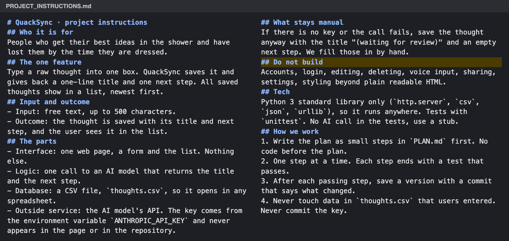
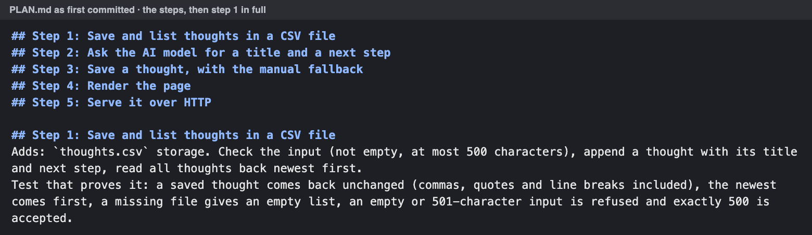
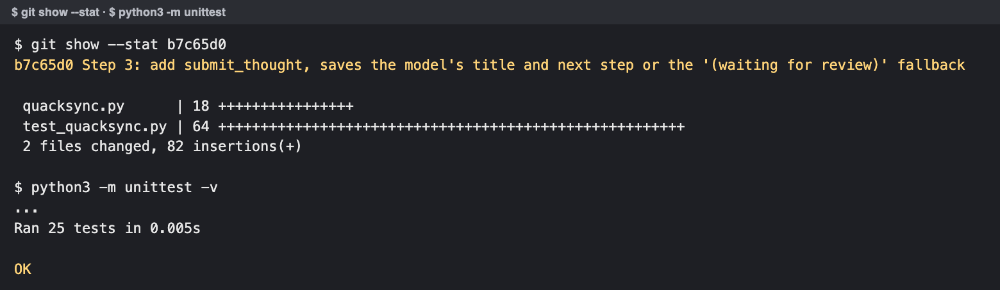
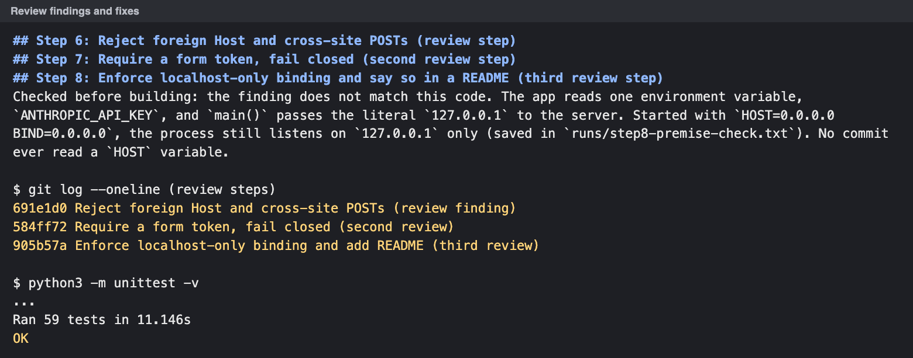
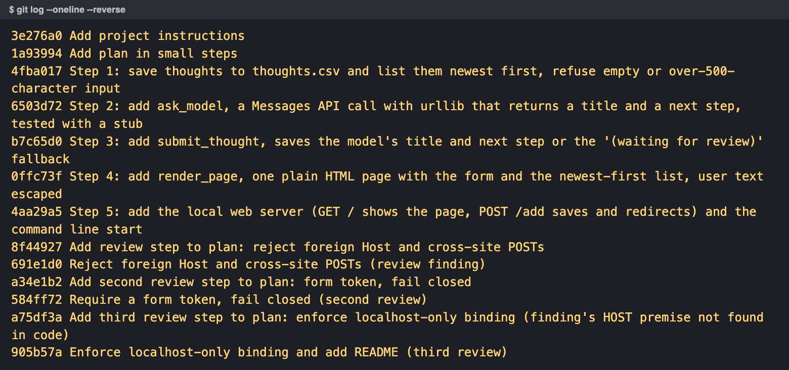
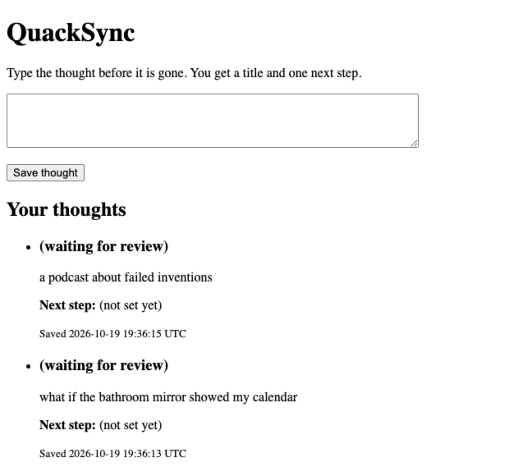
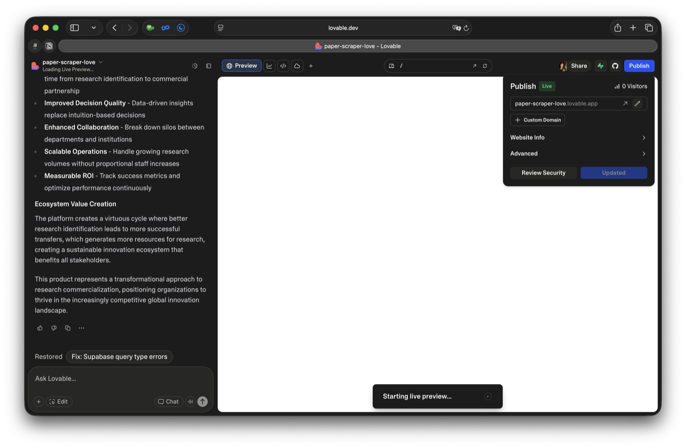
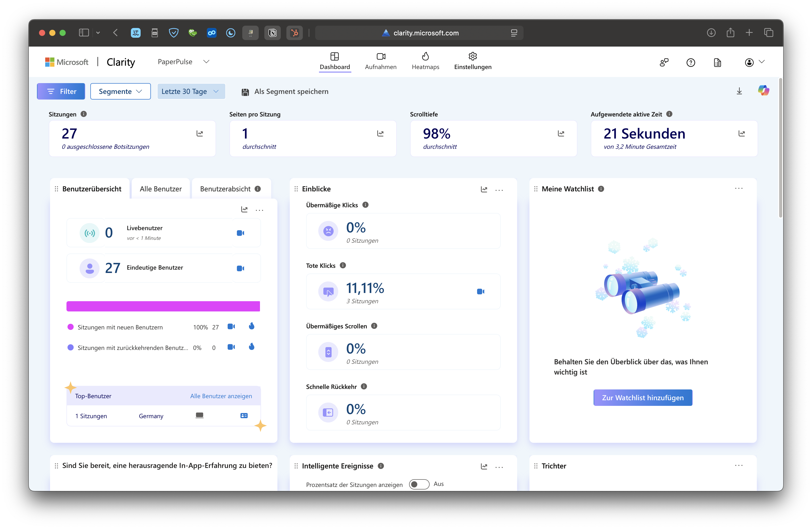

Where last week left you, a dummy people clicked and asks they accepted.
Recap · Module 05
Last week you climbed to the mock-up
Recap · Module 05
You cut it to one feature
The MVP is the smallest thing someone could pay for
Recap · Module 05
Now we are building to get users
Today's question · hands
What is the fastest thing you can build to learn?
Chapter 2 of 9
Your presentations
Your Module 05 line next to the asks people accepted, three minutes per team.
Your presentations · make it credible
Show us where you're at in 3 minutes or less!
Facts
What the segment uses today and what it costs, with its source
Numbers
Guided demos per student, demos per dummy, asks accepted per dummy next to the line
Quotes
Two things people said while clicking, with roles, not names
Images
The winning dummy's key screen and the ask screen
Verdict: which dummy passed, which dropped (type 1), or back to the problem (type 2)
What did you do?What did you learn? Where did the AI second opinion disagree?How can we help?
Chapter 3 of 9
Let's jump in! Every application ever
Every app has the same four parts, so draw yours before anyone builds it.
Your shortcut to thinking like an architect
Every application has the same four parts
Every application ever · Interface
The interface asks for the input
What do you need from the user, and they from you?
Every application ever · Logic
The logic turns input into value
What goes in, what comes out, and what does the user value?
Every application ever · Database
The data is the one part you can't rebuild
How do you protect it from being corrupted?
Every application ever · APIs
Outside services come in through APIs
What does a call cost? Set a budget before the first call.
Gate question · hands
Which part did your Module 05 dummy fake?
Interface
Logic
Database
External services
Worked example
An AI chatbot is the same four parts
Worked example · QuackSync, made up
Mark what must work, and what you do by hand
Interface a form and a list
Logic title and next step, by hand if the call fails
Database one CSV sheet
External services an AI model
Prototype the process first
Lay out the kitchen before you build it
Run the process by hand until it works, then automate the part that hurts
Run it by hand until it works. Then automate the part that hurts.
Core principle
Rebuild any part, as often as you like. Lose
0rows they entered
The code is disposable. What users entered is not.
Module 07 reads who came back.
Now you · alone, then compare
Draw your MVP on the four parts
Output
Four boxes, one tagged by hand
Chapter 4 of 9
The cheapest version that works
Pick the cheapest form that delivers the outcome, often a form, a sheet and you.
Workflow or app
A workflow runs by itself. In an app, users work
Gate question · hands
Workflow or app?
A weekly report of new tenders, sent by email
A planner where a coach builds a training week
An alert when a finalist goes quiet
The cheapest version
Who catches the input? You, a tool, or code
Prototype with a spreadsheet
A sheet is your first database
One row per thing, one column per field, fixable by hand
A · saved
B · thought
C · title
D · next step
2
19 Oct 07:12
what if the bathroom mirror showed my calendar
Mirror calendar
Sketch it on paper
3
19 Oct 07:40
a podcast about failed inventions
Failed inventions podcast
List 5 episodes
4
20 Oct 06:55
duck that reminds me to drink water
(waiting for review)
When the pieces start to relate to each other, a sheet becomes a database. Until then, a sheet is enough.
One API call
Your logic calls the model and keeps the key
Tip · before the first call
Set a spending limit, then hide the key
Anyone who sees the key can spend your money
From
The key pasted into the page, no limit at the provider.
To
A limit set first, the key in the builder's secrets or an environment variable.
You see the key only once. Store it like a password.
The tool fits the job
If all you have is a hammer, everything looks like a nail
An AI builder makes everything look like an app
Ask first: would a form, a sheet and you deliver the outcome?
Now you · in your team
What is the cheapest version that delivers?
Output
One sentence: form, sheet, call, by hand
Chapter 5 of 9
You are the product owner
An AI coding agent builds whatever you ask, so ask for small steps and check each one.
Why it matters
It feels faster. Measure it
16 experienced developers, 246 real tasks, early 2025
The patch spiral
Patch, patch, patch, spaghetti
AI removed the bottleneck of building, not the bottleneck of deciding
Gate question · hands
Who had an AI fix one thing and break another?
Core principle
You are the product owner. The agent is the contractor
It builds whatever you ask, and it never pushes back on scope
From
"Build me a recruiting platform." The agent decides what goes in.
To
You decide what and why. The agent proposes how. You check it.
Never let the contractor decide what to build.
The agent loop
Brief, one step, test, review, save
4 hours max per iteration
Show the real thing · QuackSync · demo 1 of 6 · brief
Write the brief once
Who, the one feature, the four parts, what stays manual, what not to build.

Show the real thing · QuackSync · demo 2 of 6 · plan
Ask for a plan, not code
Each step small enough to test. No code before the plan.

Now you · 1 minute
Which step would you cut or split?
Save and list thoughts in a CSV file
Ask the AI model for a title and a next step
Save a thought, with the manual fallback
Render the page
Serve it over HTTP
Show the real thing · QuackSync · demo 3 of 6 · one step
One step, one test, one version
Look at what changed. Files you didn't ask for? Ask why, or revert.

Show the real thing · QuackSync · demo 4 of 6 · review
The review caught what the tests didn't
Three reviews became three steps. The third finding didn't match the code, so the agent checked first.

Show the real thing · QuackSync · demo 5 of 6 · versions
Every step is a saved version
Two misses on a step? Go back to the last version and brief again.

Show the real thing · QuackSync · demo 6 of 6
No key yet, and it still works

1Brief
2Plan
3One step
4Review
5Versions
6Result
Both thoughts wait for review. The AI call was stubbed in the tests and never run. A person fills in the title.
From your laptop to their hands
Live means a stranger can open it
Four things before you send the link
Speed matters
One iteration should not take more than
4hours
Longer means the step was too big.
Cut it, or start over from your last version.
Now you · alone
Write the first lines of your brief
Output
Four lines your agent can read
Chapter 6 of 9
Build to get users
Hand it to people from your segment, watch without helping, and fix what stopped them.
If you're not embarrassed by the first version of your product, you've launched too late.
Reid Hoffman, co-founder of LinkedIn
Testing your prototype
Friends rehearse. Your segment counts
Without your help
Let them use it alone
One hint and it is a guided demo again
Guided · Module 05 you book the call, you steer

Without your help · this week you publish one link, they decide what to do
Watch what they do
Who came back, and where they got stuck
Returning users, dead clicks and a recording per session

Ask before you record. Consent covers course staff.
Two questions per user
Did they reach the outcome? Did they come back?
Before each iteration
Four questions before you build again
Where you stand
A slice that works is signal until someone pays
Don't struggle alone
One leads the build. Everyone brings users
Now you · in your team
Who gets the link today?
Output
Five names and a way to watch
Chapter 7 of 9
Wrap-up and check-out
Four parts, the cheapest version, the agent loop, and users without your help.
Wrap-up · chapter 3
Every application ever
Wrap-up · chapter 5
The agent loop
4 hours max per iteration
Wrap-up · chapter 6
Rung five, signal until someone pays
Reflection 1 of 3 · the content
The Content – What could you apply
🛠️
What could you apply?
🤕
What gave you a hard time?
Reflection 2 of 3 · the process
The Process – Man vs. Machine
🤖
Where did AI actually help you?
🧠
Where was your genius needed?
🕴️
What are your best hacks to share?
Reflection 3 of 3 · the results
Rose, thorn, bud
🌹
What was the breakthrough today?
🌵
What was the hardest part today?
🌱
What is an idea/feature you didn't have time to finish, but want to explore later?
Homework until next time
Put your MVP live, let 10 people per student from your segment use it without your help, and ship 2 fixes for what stopped them.
10users each
The learning floor is a live MVP per team, 5 such users per student and 1 fix.
Your line: fewer than 3 of your first 10 users reach the outcome by Module 07, and you rebuild the feature. Nobody comes back unprompted, and you bring a pivot.
Homework · how to do it
Hand it over. Watch. Fix what stopped them
1
Split the work. One leads the build, everyone brings users.
2
Invite first buyers, then sign-ups, then your segment's groups.
3
Watch without steering. Mute yourself or watch a recording.
!
Watch out. One hint makes it a guided demo.
4
Ask four questions before each build. Does it match the problem? For whom is it 10x better? Can you build it in 4 hours? How does it reach them?
5
Fix what stopped them, cut what nobody used. Two misses? Restart from your last version.
6
Keep their data. Never wipe it. Collect only what you need, and say where it goes, AI included (Legal Basics).
7
Keep the ask. Show your price. An early payment counts.
8
Get a blind second opinion. Give an AI your raw records, minus hypothesis and names. Note where it disagrees.
Homework · what you come back with
Good is used, not clicked
GOOD
WEAK
MVP
One feature, real input to outcome, 23 versions
Five features, "almost works"
Users
31 recruiters without help, 14 got their nudge, 6 came back
12 friends clicked
Fixes
"Nobody found Add." Moved, 3 more reached it
Dark mode
References
Sources in this deck
Best Practices: Coding with AI. Course resource, Course/resources/Best_Practices_Coding_with_AI.pdf.
Anthropic. (n.d.). Best practices for Claude Code. Claude Code Docs. https://code.claude.com/docs/en/best-practices, accessed 2026-10-19.
Becker, J., Rush, N., Barnes, E., & Rein, D. (2025). Measuring the impact of early-2025 AI on experienced open-source developer productivity. METR, 10 July 2025. https://metr.org/blog/2025-07-10-early-2025-ai-experienced-os-dev-study/, accessed 2026-10-19.
Hess, A. (2013, 14 August). The oldest McDonald's as architecture. Alan Hess on Architecture. https://alanhess.blogspot.com/2013/08/the-oldest-mcdonalds-as-architecture.html, accessed 2026-10-19.
Hoffman, R. (2017, 29 March). If there aren't any typos in this essay, we launched too late! LinkedIn. https://www.linkedin.com/pulse/arent-any-typos-essay-we-launched-too-late-reid-hoffman/, accessed 2026-10-19.
Ambitious Entrepreneurship. Framework 02, Validation Hierarchy, the Glossary and the course resource Best Practices: Coding with AI. Course files.
Graham, P. (2013, July). Do things that don't scale. paulgraham.com/ds.html.
See you next week!
Module 06 · Prototyping with AI · Workshop · 90 minutes
Workshop: Build it, then hand it over
Map the parts, build in small steps, and send the link before you leave.
Workshop · step 1 of 3
Map the parts
1STEP 1 · 20 MIN
MAP THE PARTS
Know what must work.
Draw your MVP: interface, logic, database, outside services.
Mark each part: must work, or by hand for now.
Workflow or app? Would a form and a sheet do?
Write the brief: user, feature, input, outcome, manual, not-to-build.
Output A map and a brief.Minutes 20
Workshop · step 2 of 3
Build in small steps
2STEP 2 · 50 MIN
BUILD IN SMALL STEPS
Real input runs through to the outcome.
Load the brief as project instructions. Plan first, no code.
One step at a time: ask, read the change, test, save.
Two misses on one step? Restore and brief again.
Wire the one API call. Keep the key out of the interface.
Publish on your tool's hosting. Point your page's button at it.
Output A live link, versions saved.Minutes 50
Workshop · step 3 of 3
Happy path, then hand it over
3STEP 3 · 20 MIN
HAPPY PATH, THEN HAND IT OVER
First users today.
Log your line, dated, before the first user.
Run the happy path: real data in, watch it run, outcome out?
Send the link to your Module 05 first buyers. Don't steer.
Commit to the bar. Pick floor or full. Set a midweek day.
Output A dated line, users invited, targets, midweek day.Minutes 20
Arrived empty-handed?
Build the smallest slice that works
No winner? Build your best dummy's feature. Back at the problem? Build the smallest working slice, you behind the screen, and invite your interviewees.
Homework until next time
Put your MVP live, let 10 people per student from your segment use it without your help, and ship 2 fixes for what stopped them.
10users each
The learning floor is a live MVP per team, 5 such users per student and 1 fix.
Your line: fewer than 3 of your first 10 users reach the outcome by Module 07, and you rebuild the feature. Nobody comes back unprompted, and you bring a pivot.
See you next week!
Module 06 · Prototyping with AI · Case discussion · about 90 minutes
Case discussion: Langfuse
Stand with three founders deciding which borrowed part to replace first as strangers arrive.
Vote 1 · 16:00 UTC, 29 August 2023
What do the founders replace or build first?
A · Open analytics on an open-source tool for every user
B · Integrate OpenTelemetry
C · Model-based evaluations and labeling, their stated next step
Timeline · 2023
Fifteen weeks from first commit to strangers
Date
Event
18 May
Repository created, "kill all", a fresh "init"
26 May
"v1"
1 June
Accounts and a hosted cloud
7 June
Sign-up by form, website button books a call with a founder
26 June
Public sign-up, "Get started by yourself" next to "Guided onboarding"
Date
Event
17 July
Analytics on Looker Studio for flagged users
14 August
Demo project for every new user
20 August
Top product of the day on Product Hunt
29 August, 16:14 UTC
Show HN
Exhibit 3, selected rows
What a new user met on 29 August 2023
What
State on 29 August 2023
Since
Start screen
"Create new project" (get started by yourself), "View demo project" and "Guided onboarding" (a call with a founder)
26 June, as on 27 August
Demo project
View-only, live data from the documentation chatbot
14 August
Dashboards
Traces, token usage by model, scores, per-user views, for every user
By 27 August (video)
Analytics (Looker Studio)
For users with the flag "analytics-alpha" only. Others saw "Analytics is in closed alpha" and an invitation to get in touch
17 July
Support
Feedback button, support chat offered while setting up a project, a Discord community
23 June, 29 July
Account
No way to change or reset the password
Open issue of 21 August
In the founders' words · 29 August 2023
Half a day, or a debt?
"Integrating Looker Studio got us to first analytics charts in half a day."
"As it is not open-source and does not work with our UI/UX, we are looking to switch it out for an OSS solution to flexibly generate charts and dashboards."
Board plan
Mark what still needs a founder
Columns: borrowed and why · what it costs a stranger · what they knew about use · what they would need to know. Votes top right.
Use without help · on 29 August 2023
What did they know about use?
One user, many hours a day as Deichmann reported it
Alpha users onboarded every week the July update
Five named teams on the landing page
370 stars, 21 forks fifteen minutes after the post
No published number for sign-ups, active users or returning users.
Vote 2 · same question
What do the founders replace or build first?
A · Open analytics on an open-source tool for every user
B · Integrate OpenTelemetry
C · Model-based evaluations and labeling, their stated next step
Bridge · to your own build
Mark what still needs you
Langfuse let strangers in with a call, a chat and a flag still in place. Now draw your own MVP on the four parts and mark what still needs you.